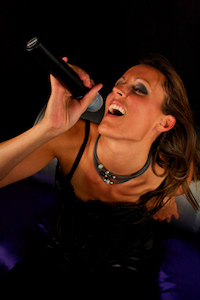

LE CHANT

La pratique du chant n’est pas un don mais un état d’esprit ! Tout le monde peut donc chanter mais il est primordial de bien choisir son professeur de chant ! Ce dernier doit être capable d’adapter sa pédagogie en fonction de votre personnalité afin de vous aider, au mieux, à trouver votre voix !
Chanter n’est pas un acte naturel, en revanche, exprimer des émotions en est un. Lorsque nous communiquons notre état via une émotion dite « primaire » (il y en a 4 : la joie, la tristesse, la colère et la peur), nous produisons des sons d’une grande efficacité et un certain nombre de mimiques que nous allons appliquer au chant.
Par exemple, mimer le pleur (sans être dans l’émotion !!) va nous aider à atteindre des notes aigues, mimer le rire permet d’éviter toute constriction laryngée. L’expression « chanter avec ses tripes » prend alors tout son sens ! Je ne vous en dis pas plus…
L’apprentissage du chant commence par une bonne connaissance du mécanisme de projection vocal :
- La respiration
- Le Larynx, les cordes vocales
- La posture
- Le soutien du flux d'air
- L'espace de raisonnance et comment l'optimiser
- Quelques notions neurologiques très simples
Le chant va vous permettre de développer une qualité très recherchée aussi bien dans votre vie privée, sur une scène qu’au sein d’une entreprise : votre CHARISME (leadership), subtil mélange de confiance en soi, spontanéité, authenticité et lâcher prise.
Une qualité qui prendra davantage d’ampleur grâce à un travail avec les chevaux. Il existe en effet de nombreuses similitudes avec le chant : le cheval est un animal charismatique qui impressionne par sa prestance, sa puissance et sa capacité à vivre l’instant présent. Sa gentillesse et sa générosité nous mettent facilement en confiance. Il devient alors facile de repousser nos propres limites et de ressentir, de manière décuplée, cette qualité tant convoitée et l’impact que cela peut avoir sur nos vies.
Je me ferais un plaisir de vous expliquer plus en détail l’enjeu d’un tel travail lors de notre entretien individuel (gratuit et sans engagement).
Voici des notions clé sur lesquelles nous porterons notre attention : l'instant T, la confiance, la concentration, l’équilibre, le calme, la communication non verbale, le plaisir (notion fondamentale pour le cheval mais également pour l’homme), l’action, la réactivité, savoir s’adapter, observer, écouter, établir la connexion (être sûr que l'autre nous écoute afin de permettre la communication).
La formation s’adresse, aux particuliers, entreprises, collectivités, chanteurs amateurs ou professionnels, cavaliers amateurs ou professionnels, centres de réinsertion sociale, formateurs horse coaching.